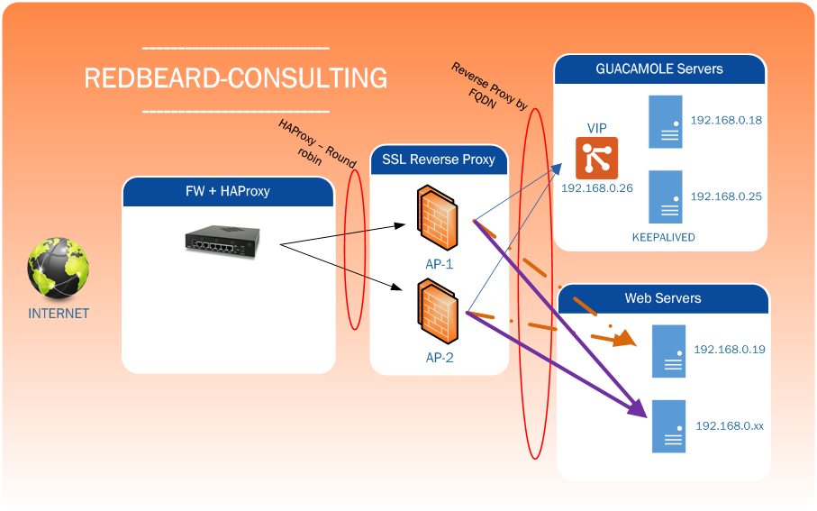

Comment configurer keepalived
Objet
Nous verrons dans ce document comment configurer keepalived pour deux serveurs guacamole. C'est juste pour l'exemple et le fun.
Description de l'environnement
Nous sommes dans un environnement simple, dont voici le schéma

Comme on peut le constater notre point faible est le HAProxy car il n'y en a qu'un => c'est le firewall pfsense.
Le HAProxy fait du round-robin sur les deux serveurs Apache SSL (letsencrypte) en mode Reverse Proxy vers la VIP des serveurs Guacamole.
Pourquoi cette idée folle?
En fait, tout est partie d'un problème de déconnexions intempestives sur mon serveur guacamole. A la base, il n'y avait qu'un seul reverse proxy qui permettait de protéger le port par défaut du tomcat8 (tcp_8080).
Je ne rappellerai pas les avantages et inconvennients du reverse proxy apache. Ici je l'utilise pour partager une seul IP WAN sur mes serveurs guacamole, cloud...
Fichier keepalived.conf
Vous trouverez ce fichier dans:
/etc/keepalived/keepalived.conf
Paramétrage du Master
Voici le paramétrage:
# Settings for notifications global_defs { notification_email { admin@mon-domain.com # Email address for notifications } notification_email_from guac01@domain.intra # The from address for the notifications smtp_server 192.168.0.9 # You can specifiy your own smtp server here smtp_connect_timeout 15 } # Configuation for the virtual interface vrrp_instance VI_1 { interface ens160 state MASTER # set this to BACKUP on the other machine priority 101 # set this to 100 on the other machine virtual_router_id 51 smtp_alert # Activate email notifications authentication { auth_type AH auth_pass 3615codeULA # Set this to some secret phrase } # The virtual ip address shared between the two loadbalancers virtual_ipaddress { 192.168.0.26 dev ens160 # Pour les non anglophone, ceci est notre VIP } virtual_server 192.168.0.26 8080 { # monitored interval delay_loop 3 # distribution method lvs_sched rr # routing method lvs_method DR protocol TCP } # backend server#1 real_server 192.168.0.18 8080 { weight 1 HTTP_GET { # On check via un HTTP GET la disponibilité de l'URL 192.168.0.18:8080/guacamole url { # monitored path path /guacamole # status code for normally state status_code 200 } # timeout(sec) connect_timeout 3 } } # backend server#1 real_server 192.168.0.25 8080 { weight 1 HTTP_GET { # On check via un HTTP GET la disponibilité de l'URL 192.168.0.25:8080/guacamole url { # monitored path path /guacamole # status code for normally state status_code 200 } # timeout(sec) connect_timeout 3 } } }
Comment ça marche?
Voir les commentaires qui sont assez explicites!
Paramétrage des slaves
C'est pareil mais on remplace MASTER par BACKUP et on met un poids inférieur à celui du MASTER.
En conclusion
Grace à keepalived, on peut faire un semblant de cluster passif permettant ainsi de faire de la haute disponibilité avec de l'open-source.